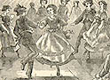

){kind=link}

|
In his day-dreams, the Spaniard of the sixteenth century saw an Eldorado in the unknown West; a land of gold and glittering gems, of flowers and fruit, of shining sands and crystal streams,of soft air and mild skies; where a temperate climate and fertile soil promised bodily ease, and unfailing health was to be gained from fountains of youth-restoring virtue -- the Hesperia of ancient poets realized in the New World. For this, Narvaez, De Soto, and a host of others, sought long and traveled far, but died without the sight; nature had provided no "Islands of the blest," even amid the soft airs of the Pacific. There was, however, an El Dorado there; not the fabled clime which lured the imaginative Spaniard, but still a land of wealth and plenty, where industry was to find a bounteous reward, and enterprise build up a golden State. But not for a superstitious race, ignorant of true liberty, was this doman reserved. In the divine predestination of history this hidden wealth was to serve the purposes of freedom; it was to aid a civilization based on individual thought and energy; to strengthen a free Republic, and in the dark hour furnish the "sinews of war," in a death-struggle with slavery. . . . But my acquaintance in Santa Fe was of quite a miscellaneous character -- "from the duke to the dustman." I took a Spanish teacher (male), and the third day of my studies "interviewed" him thus: "Hay baile esta noche, Senor!" "Si, Senor, quiere uste avenir? Habra Senoritas bonitas." "Eso quisiera yo."  The result of this attempt at Castilian was a visit to that evening's baile (by-lay), or Mexican dance. Americans improperly call them fandangoes, applying the name of one kind of dance to the whole proceeding -- as if one should call an American mind a "schottische." They are the national amusement. All new-comers of importance are welcomed with a public ball, and all public enterprises are inaugurated and ended by the same. Scene: a long room, wide enough for one cotillion and long enough for half a dozen; a raised platform for a first-class string-band, and a chair at the other end for la maestra (feminine) of ceremonies, with seats ranged against the wall for fifty or a hundred spectators. The Mexican girls are exceedingly graceful, with very small hands and feet and most enchanting voices; but their features are not handsome, being dark, in the first place, besides having an indescribable something which I imagine I can see in all dark races, and which, for want of a term, I call dormant tigerishness. As dancers they cannot be excelled. They never have the set "called," as in the States, dancing being too much a lifetime affair with them -- something they learn as soon as they can walk. Their cotillions are very complicated. The common waltz, about the same as ours, is known as the Valse Redondo. But the National dance -- the one which shows the Mexican women to the best advantage -- is the Valse de Spachio, which might be translated "slow waltz." The music is slow and seemingly mournful, but the elegant movement cannot be described. The first figure might be called a "waltzing cotillion," ending with two lines, each senorita opposite her partner. Thence she advances toward him with a score of graceful gestures -- bowing, sinking, rising, extending hands and again clasping them and retreating, waving scarf or handkerchief, and all in perfect time and without faulty or ungraceful motion. At length, and apparently following the motion of the "head lady," the couples come rapidly together, and, as the music breaks suddenly into a lively air, are whirled to all parts of the room in quick gallopade. This again subsides, and they waltz back into a sort of hollow square, from which each lady in turn issues and makes the circuit of the set in slow waltz, tantalizing different cavaliers with feint and retreat. It looks childish on paper, but is enchanting to witness. There seems to be no distinction at these public balls on the score of character. The social indifference on that subject would astonish most Americans. In the Stantons, Anthonys, etc., are really in earnest in the statement that "woman should have no worse stigma than a man for sexual sins," they would certainly be gratified here, for the disgrace is, at least, as great to one sex as the other. Indeed, I think the general judgment for marital unfaithfulness is much more severe on a man than on a woman. The young Americans bring their mistresses to the baile with the same indifference as the Mexicans do their sweethearts. These "girls" are scrupulously polite, and so unlike the same class in the States, that it can only be accounted for from the fact that they see no disgrace whatever in their mode of life, and feel so sort of social degradation. One witnesses no drunkenness, no obscene word or gesture, nothing to offend; and the uniform testimony of the American youths is, that they are the most faithful, kind and affectionate women of that class in the world. Without chastity, they still possess all the other distinctive virtues of the sex. The force of an improving public opinion has, in the last five years, caused many marriages between such couples . . . Twelve days I abode in Santa Fe, and my summing up is about like that of the sailor who had agreed to write to his friends of the manners and customs of the people he visited: when shipwrecked on the coast of Patagonia he wrote, "These people have no manners, and their customs are disgusting." No, I am wrong there: they have a surplus of manners; it is in morals there is a deficit. The Territory contains about eighty thousand native Mexicans, divisible into three classes: the genta fina, or noble bloods, of whom there are about fifteen families; the respectable middle classes, who may possibly amount to two thousand in all; and the "Greasers," who make up about ninety-five per cent. of the whole. Taking out fifteen families, it is my solemn conviction that the property of all the other Mexicans in the Territory will not average fifty dollars apiece. I thought, before this trip, that Utah was the poorest part of America; but the Mormons roll in wealth compared to the New Mexicans. As to morals, which is the worse, polygamy or promiscuous concubinage? That is a great moral question which I am not competent to decide. People who have lived among them many years confidently assert that there are some, in fact a number, of virtuous people among the natives. I hope it is so. Let us take it for granted, and dismiss the subject. |